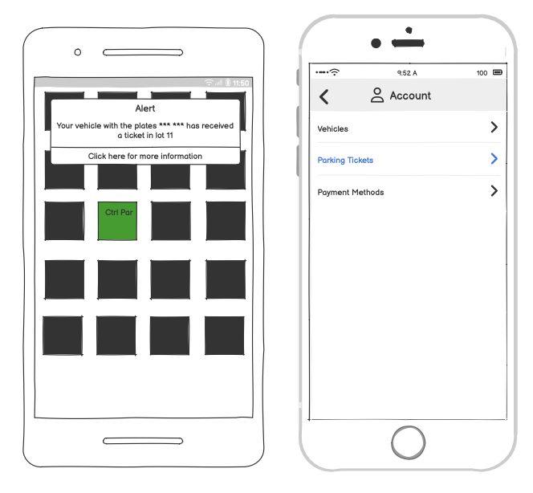
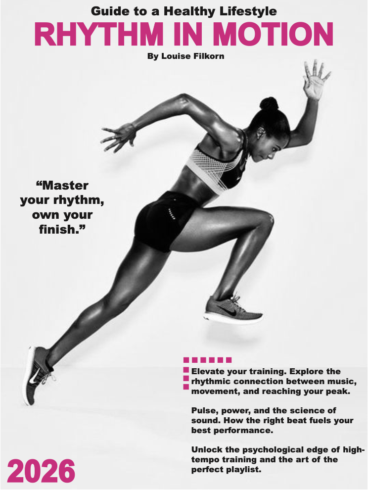
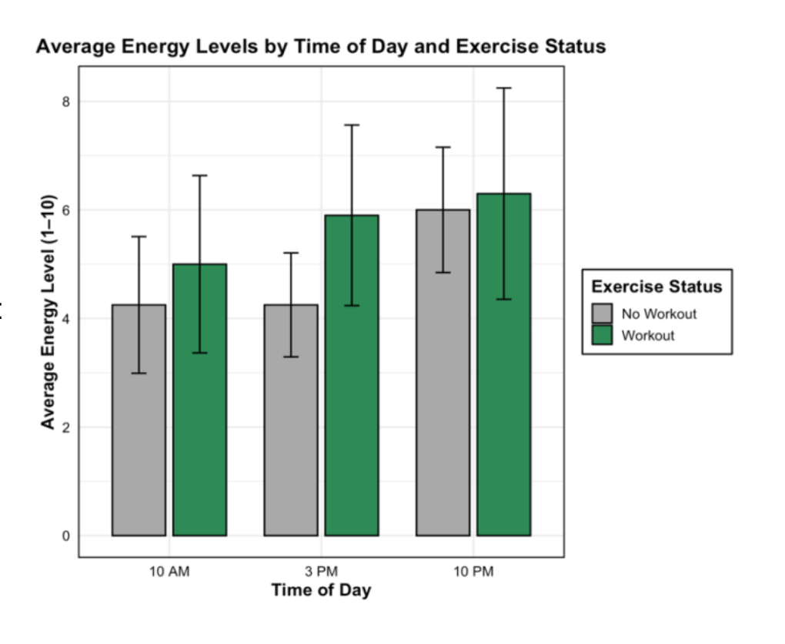

Technical Samples
Louise Filkorn possesses a wide range of technical skills that she has developed throughout her time as Informatics major at UMass. She has developed proficiency in a variety of technical languages and software such as R, Python, Java, Figma, VScode, Adobe, and Microsoft Suite. With the skilled use of these platforms she has become a seasoned data analyst with impressive critical thinking and problem solving skills. Below are a few examples of what Louise is able to do with the tools in her toolbox.

Figma Prototyping: Ctrl Park
Prototype, usability evaluation, and cognitive walkthrough of a parking app designed for the UMass comunity

Adobe Ecosystem: Magazine
Health and fitness magazine created using Adobe InDesign, Adobe Illustrator, and Photoshop

R Studio: Personal Health Analysis
What Impact does Working Out have on Afternoon Energy Levels?